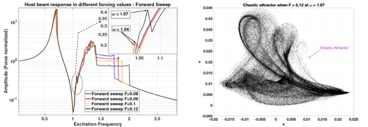
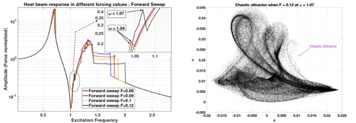

Nonlinear Metamaterials
Our research focuses on locally-resonant metamaterials with nonlinear host structures, where we aim to develop metamaterials that can mitigate/reduce sudden amplitude jumps, and high-amplitude vibrations due to nonlinear phenomena. Examples include structures with nonlinear stiffness, and those exhibiting frequency lock-in under vortex-induced vibrations. This type of nonlinear behavior can be observed in various systems, including lightweight systems used in aerospace, where structures have inherently low damping, and large-sized wind energy systems, where the blades have nonlinear stiffness and damping characteristics.
We also focus on developing structures with programmable nonlinear parameters using locally-resonant (LR) metamaterials. For a nonlinear structure with a periodically attached array of resonators, our goal is to determine the relationships between the resonator parameters (e.g. tuning, mass and spatial distribution), and the effective parameters of the nonlinear metastructure, such as linear and nonlinear stiffness, damping, and so on. This will inform the design decisions for configurable nonlinear metastructures.

We also investigate the nonlinearity induced on linear host structures by local resonators. Our initial results show that even though the local nonlinear resonators do not normally show chaotic behavior, their interaction with the linear host structure may lead to chaotic, high-amplitude oscillations of the host. This study presents the potential dangers of adding nonlinear resonators to linear structures to obtain a wide bandgap.

Our research focuses on locally-resonant metamaterials with nonlinear host structures, where we aim to develop metamaterials that can mitigate/reduce sudden amplitude jumps, and high-amplitude vibrations due to nonlinear phenomena. Examples include structures with nonlinear stiffness, and those exhibiting frequency lock-in under vortex-induced vibrations. This type of nonlinear behavior can be observed in various systems, including lightweight systems used in aerospace, where structures have inherently low damping, and large-sized wind energy systems, where the blades have nonlinear stiffness and damping characteristics.
We also focus on developing structures with programmable nonlinear parameters using locally-resonant (LR) metamaterials. For a nonlinear structure with a periodically attached array of resonators, our goal is to determine the relationships between the resonator parameters (e.g. tuning, mass and spatial distribution), and the effective parameters of the nonlinear metastructure, such as linear and nonlinear stiffness, damping, and so on. This will inform the design decisions for configurable nonlinear metastructures.
We also investigate the nonlinearity induced on linear host structures by local resonators. Our initial results show that even though the local nonlinear resonators do not normally show chaotic behavior, their interaction with the linear host structure may lead to chaotic, high-amplitude oscillations of the host. This study presents the potential dangers of adding nonlinear resonators to linear structures to obtain a wide bandgap.
